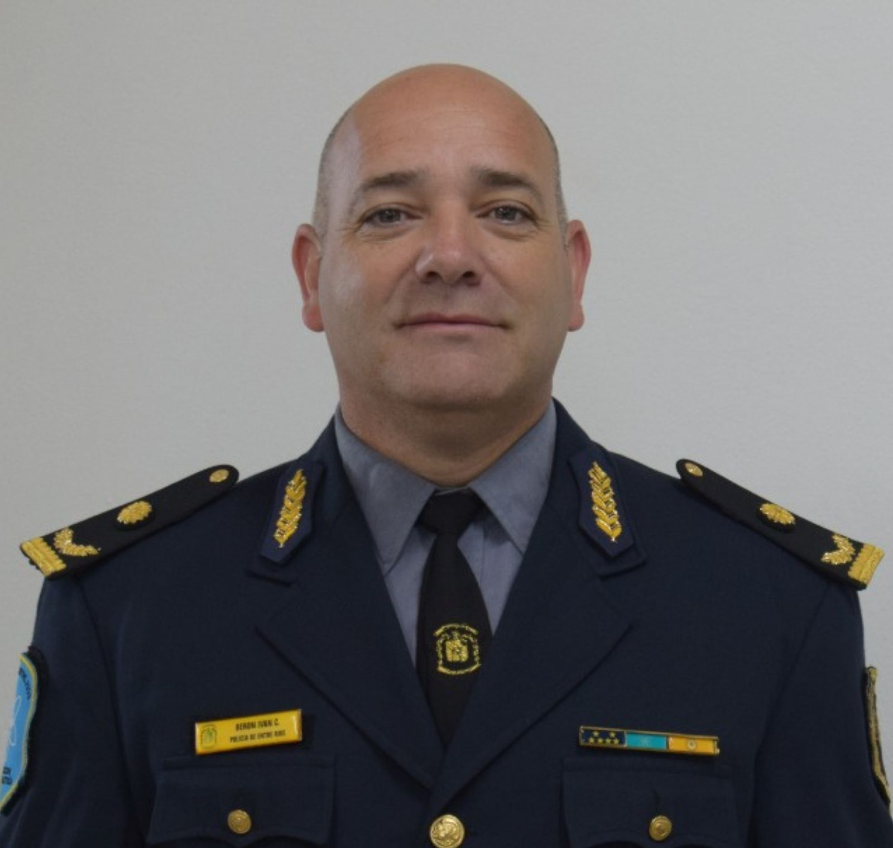
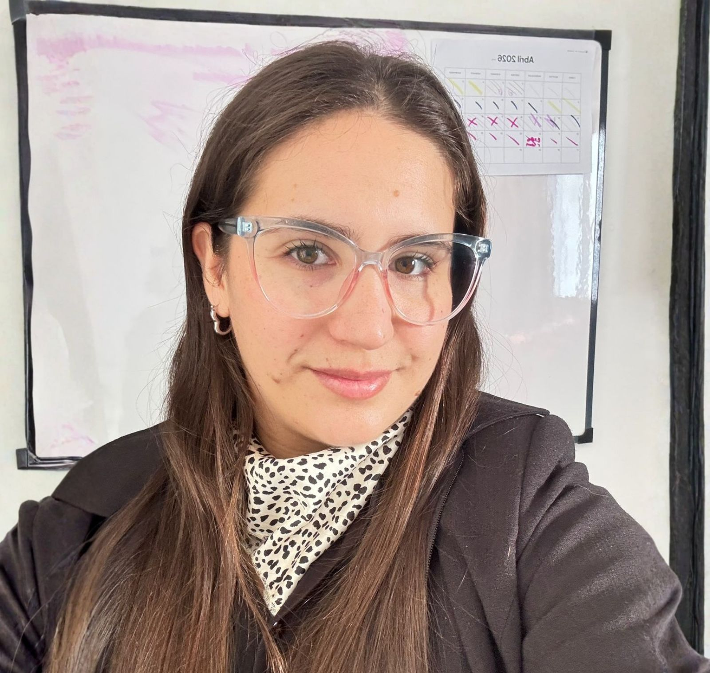

Miércoles • Jornada de Apertura
Recepción y Acreditación de Asistentes
Entrega de credenciales oficiales y acreditación general en el Hall Principal.
Acto Formal de Apertura
Bienvenida protocolar de autoridades institucionales y académicas en el Auditorio Principal.
"Del Hallazgo a la Prueba: El momento cero en la construcción de la evidencia forense. Modelo operativo transferible de intervención arqueológico forense en la Investigación Criminal"

Arqueóloga Forense Ruth Alison Benítez
Especialista en Arqueología Forense • Paraguay 🇵🇾
"Byrnas: El uso de armas de letalidad reducida como plataformas intermedias"



Crio. Insp. Iván Berón, Crio. Lázaro Azcue & Of. Ppal. Lic. Sergio Ocampo
Dirección General de Policía Científica • Policía de Entre Ríos 🇦🇷
Talleres Especializados en Simultáneo
"Del proyecto a la Prueba: Claves para crear un laboratorio forense eficiente"
Disertante: IAFIS
"Portfolio de soluciones para el ámbito forense - Escáner láser y drones"
Disertante: RUNCO
"Nuevas técnicas y tecnologías de revelado de rastros"
Disertante: ADNC
"Fuentes de Luz para Aplicaciones Forenses"
Disertante: RESAICARD
"Aporte de la microscopía a la actividad forense"

Lic. en Criminalística Oriana Núñez
Licenciada en Criminalística • Corrientes, Argentina 🇦🇷
"Avances en entomología forense: estudios morfológicos, ecológicos y moleculares para optimizar la estimación del IPM"

Dra. en Biología Ana Julia Pereira
Entomóloga Forense • Neuquén, Argentina 🇦🇷
"ABS vs. Frenos Convencionales: Análisis comparativo en frenadas de motocicletas"

Of. Principal Lic. Herrera Margarita / Of. Principal Sergio Ocampo
Accidentología Vial • Policía de Entre Ríos - Argentina 🇦🇷
Jueves • Segunda Jornada
"Revelado no destructivo de huellas latentes y eliminación de fondo mediante polarimetría de Müller"

Dr. Lic. Emanuel Chironi
Doctor en Ciencias Físicas, Lic. en Criminalística • Río Negro, Argentina 🇦🇷
"Heridas ocasionadas por proyectil de arma de fuego con silenciador"

Téc. Henry Alberto Giraldo Jiménez
Técnico Balístico Forense • Colombia 🇨🇴
"Innovación analítica en criminalística: el papel de la quimiometría en la datación forense y el análisis de drogas"

Dr. Luis Bartolomé Moro
Doctor en Química • España 🇪🇸
"La evidencia química en criminalística: intervención del laboratorio en un estudio de caso"

Bioq. Gamaliel Zar
Bioquímico Forense • Buenos Aires, Argentina 🇦🇷
Talleres Especializados en Simultáneo
"Luces forenses: aplicaciones y alcance"
Disertante: NARCOTTI G.
"La Criminalística y los criptoactivos"
Disertante: ROMERO M.
"Identificación vehicular y tecnología criminal. Nuevas herramientas para la investigación forense"
Disertante: CAMARA G.
"Detección automatizada de espermatozoides en muestras forenses con Inteligencia Artificial"
Disertante: J.M. SYSTEM
"Abordaje Pericial de intoxicaciones por nitritos: presentación de casos"


Bioq. Lic. Mariela Arismendi & Bioq. Juliana Herrera
Bioquímica Forense y Toxicología • Argentina 🇦🇷
"Más allá de la autopsia: Innovación tecnológica y el futuro de la Tanatología Forense"

Dr. Gustavo Breglia
Médico Forense del Cuerpo de Investigación Forense • Poder Judicial de Río Negro 🇦🇷
"Evolución de la falsificación en documentos de identidad chilenos: de la simulación a la emulación, abordaje técnico y casos especiales"
Mg. José Manuel Duarte Ulloa
Magíster, Perito en Documentología y Asesor Criminalístico • Chile 🇨🇱
Viernes • Jornada de Clausura
"Hacia un Método Multiaxial de Valoración de Peligrosidad en Adolescentes Infractoras: Integración Criminológica-Criminalística en el Contexto Ecuatoriano"

Dr. Vinicio Altamirano
Doctor y Director de INSFOR Ecuador • Ecuador 🇪🇨
"Los Ojos del Algoritmo: Reconstrucción Virtual y Simulación de Siniestros Viales en la Era de los Vehículos Inteligentes"
José Augusto Bustamante Benítez
Especialista en Reconstrucción y Simulación Vial Computarizada
Acto Solemne de Clausura & Certificación
Culminación oficial del III Congreso Internacional de Ciencias Forenses 2026. Espacio protocolar de agradecimiento, reconocimientos especiales y entrega de acreditaciones académicas.
Discurso protocolar y balance a cargo de autoridades institucionales.
Reconocimiento a ponentes y delegaciones nacionales e internacionales.
Entrega oficial de certificados de asistencia con validez académica.